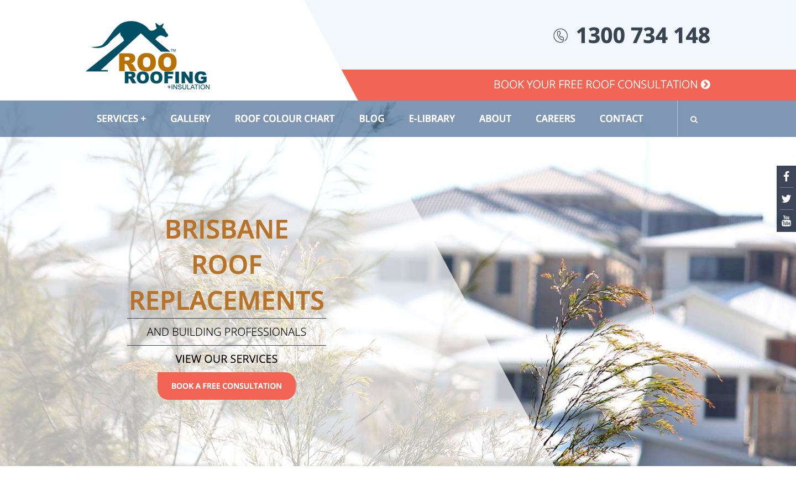
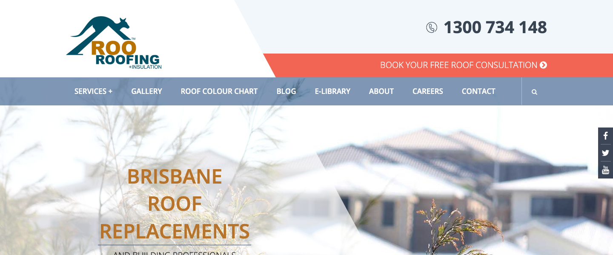
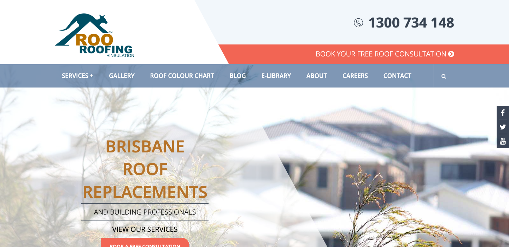
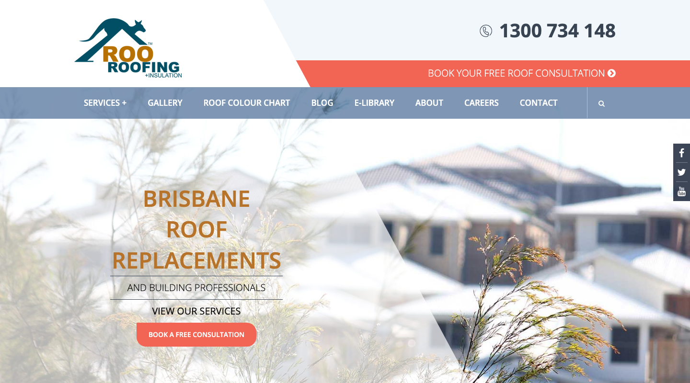
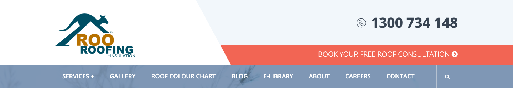

Internal Audit Report · ProfitsLocal
Roo Roofing
roofer ·Brisbane · ★ 4.6 (40 reviews)
总体判断
审计概览
audit_score=62 → strong_redesign · weakest: gbp 32, technical 40 · fired: no_https · 1 critical issues
已触发 hard triggers
联系方式 + GBP 快照
商家档案
—六维度评分总览
每个维度的强弱在哪
现场证据 · 桌面 + 移动
客户访问时看到的页面


关键问题 · 1 项
立刻在伤害成交的硬伤
https_enabled
命中原因http only
证据browser shows "Not Secure" in URL bar
主要问题 · 2 项
影响转化的明显短板
homepage_title_clear
命中原因title='# BRISBANE ROOF REPLACEMENTS' contains-name=true contains-niche=false
证据截图 · Desktop 600px region

local_schema_markup
命中原因no LocalBusiness JSON-LD
证据 · 2 JSON-LD block(s) found
{"@context":"http:\/\/schema.org","@type":"WebSite","@id":"#website","url":"https:\/\/www.rooroofing.com.au\/","name":"Roo Roofing","potentialAction":{"@type":"SearchAction","target":"https:\/\/www.rooroofing.com.au\/?s={search_term_string}","query-input":"required name=search_term_string"}}
[
{
"@context": "https://schema.org",
"@type": "Organization",
"name": "Roo Roofing",
"url": "https://www.rooroofing.com.au",
"logo": "https://www.rooroofing.com.au/wp-content/uploads/2016/01/logo.png",
"description": "Roo Roofing provides specialist roof replacement, roof restoration, roof repairs, asbestos roof removal, gutters, fascias, insulation and ventilation services to Brisbane and South East Queensland.",
"foundingDate": "1992",
"email": "office@rooroofing.com.au",
"sameAs": [
"https://www.facebook.com/rooroofing/",
"https://au.linkedin.com/company/roo-roofing"
],
"contactPoint": {
"@type": "ContactPoint",
"telephone": "+61-1300-734-148",
"contactType": "customer service",
"availableLanguage": "English",
"areaServed": "AU"
}
},
{
"@context": "https://schema.org",
"@type": "RoofingContractor",
"name": "Roo Roofing",
"url": "https://www.rooroofing.com.au",
"telephone": "+61-1300-734-148",
"email": "office@rooroofing.com.au",
"image": "https://www.rooroofing.com.au/wp-content/uploads/roo-roofing-logo.png",
"priceRange": "$$",
"address": {
"@type": "PostalAddress",
"streetAddress": "79 Cambridge Street",
"addressLocality": "Coorparoo",
"addressRegion": "QLD",
"postalCode": "4151",
"addressCountry": "AU"
},
"geo": {
"@type": "GeoCoordinates",
"latitude": -27.502,
"longitude": 153规则细节 · 39 项明细
每条规则的命中与失分原因
Google Business Profile 32/100 8 规则
| 规则 | 命中 | 得分 | 原因 |
|---|---|---|---|
has_website_link | ✓ | 10/10 | website: http://www.rooroofing.com.au/ |
review_volume_vs_peers | ✓ | 12/25 | 40 reviews |
average_rating | ✓ | 10/10 | ★4.6 |
has_hours | ✗ | 0/5 | no hours |
image_count | ✗ | 0/10 | 0 images |
has_business_description | ✗ | 0/10 | no description |
has_service_area | ✗ | 0/15 | no service area |
owner_replies_to_reviews | — | 0/15 | reply rate not enriched |
Technical 40/100 7 规则
| 规则 | 命中 | 得分 | 原因 |
|---|---|---|---|
https_enabled | ✗ | 0/20 | http only |
first_paint_under_3s | — | 0/25 | LCP not measured (need Playwright/Lighthouse) |
mobile_responsive | ✓ | 30/30 | lighthouse mobile 80 |
core_web_vitals_pass | — | 0/10 | CWV not measured |
form_submittable | ✓ | 5/5 | form submits |
no_console_errors | ✗ | 0/5 | 1 console errors |
favicon_and_meta | ✓ | 5/5 | favicon: yes, meta: yes |
UX & Conversion 90/100 7 规则
| 规则 | 命中 | 得分 | 原因 |
|---|---|---|---|
above_fold_cta_within_5s | ✓ | 30/30 | CTA keyword found above fold |
phone_visible_above_fold | ✓ | 20/20 | phone digits above fold |
click_to_call_link | ✓ | 10/10 | tel: link present |
quote_or_booking_form | ✓ | 20/20 | <form> element present |
contact_path_short | — | 0/10 | click-depth not measured |
has_gallery | ✓ | 5/5 | gallery mentioned |
has_testimonials | ✓ | 5/5 | testimonials section present |
Content 92/100 6 规则
| 规则 | 命中 | 得分 | 原因 |
|---|---|---|---|
homepage_title_clear | ✗ | 12/20 | title='# BRISBANE ROOF REPLACEMENTS' contains-name=true contains-niche=false |
service_copy_specific | ✓ | 20/20 | 78 service-related verbs detected |
trust_signals_present | ✓ | 20/20 | 16 trust-keyword mentions |
localized_content | ✓ | 15/15 | mentions brisbane |
evidence_of_recent_update | ✓ | 15/15 | fresh year mentioned |
non_ai_filler_copy | ✓ | 10/10 | no obvious AI-filler |
SEO 51/100 5 规则
| 规则 | 命中 | 得分 | 原因 |
|---|---|---|---|
title_meta_present | ✓ | 25/25 | title=yes meta=yes |
h1_unique | ✓ | 20/20 | 1 <h1> tags |
local_schema_markup | ✗ | 0/20 | no LocalBusiness JSON-LD |
image_alt_present | ✗ | 6/20 | 45 images, 29% with alt |
sitemap_robots | — | 0/15 | /sitemap.xml + /robots.txt probe not run (need Playwright) |
Visual 50/100 1 规则
| 规则 | 命中 | 得分 | 原因 |
|---|---|---|---|
visual_dimension_stub | — | 50/100 | visual dimension is filled by Block E (vision LLM autoresearch) |
视觉审计 · Vision LLM
设计观感的整体诊断
The page clearly identifies the business and phone number, but the hero design feels dated and makes the main action less direct than it should be for a Brisbane roofing customer.
washed_out_hero_image
观察到The main roof photo is heavily washed out with a pale white overlay and blurred background, making the house and roof difficult to inspect.
为什么是问题A Google-searching local customer wants quick confidence that this roofer does real, solid roof work in Brisbane. When the main image looks faded and unclear, the business feels less current and less tangible.
正确长啥样A sharp, high-resolution Brisbane roof project photo with natural contrast, visible roof detail, and a subtle dark or light overlay only behind the text.
redesign 怎么改Replace the washed-out hero with a crisp completed roof replacement photo, keep the roof surface clearly visible, and place the headline in a clean text area with controlled contrast.
证据截图 · Desktop 700px region

headline_visual_style_outdated
观察到The headline 'BRISBANE ROOF REPLACEMENTS' is set in large orange all-caps text with thin horizontal rules and a geometric translucent panel behind it.
为什么是问题The styling feels like an older template rather than a current trade business site. For a high-cost roof replacement, visitors often read visual polish as a sign of business care and professionalism.
正确长啥样A simpler headline such as 'Roof Replacement in Brisbane' in dark navy or charcoal, with one strong supporting line and a single high-contrast call button beneath it.
redesign 怎么改Remove the decorative horizontal rules and angular overlay, rewrite the hero as a plain service-location headline, and use a modern type scale with stronger contrast.
证据截图 · Desktop 700px region

cta_competes_with_header_bar
观察到There is a coral 'BOOK YOUR FREE ROOF CONSULTATION' bar across the top and a second smaller coral 'BOOK A FREE CONSULTATION' button in the hero.
为什么是问题The two similar calls to action compete for attention instead of making the next step obvious. A local-search visitor may pause to scan instead of immediately calling or booking.
正确长啥样One dominant above-the-fold action: a large phone button or 'Get a Free Roof Quote' button, supported by a secondary text link only if needed.
redesign 怎么改Use one primary coral CTA in the hero, make the phone number a clear click-to-call action, and reduce the top coral banner to a smaller utility link or remove it.
证据截图 · Desktop 800px region

phone_number_not_primary_enough
观察到The phone number '1300 734 148' appears large in the top-right, but it is separated from the hero action and presented as static header text.
为什么是问题For urgent roofing needs, many visitors want to call immediately. If the number does not look like the primary action, some people will look around longer or miss the fastest contact path.
正确长啥样A prominent click-to-call button reading 'Call 1300 734 148' in the header and repeated in the hero, with strong contrast and enough spacing around it.
redesign 怎么改Convert the header number into a clear phone CTA button, add a phone icon inside the button, and repeat a call-focused CTA near the hero headline.
证据截图 · Full desktop

navigation_feels_heavy
观察到The blue navigation bar contains many equally weighted items: Services, Gallery, Roof Colour Chart, Blog, E-Library, About, Careers, Contact, plus search.
为什么是问题A new visitor looking for a roofer can be distracted by secondary links like Blog, E-Library, and Careers before seeing the most useful paths: services, proof, and contact.
正确长啥样A shorter nav focused on Services, Projects, Reviews, About, and Contact, with quote and phone actions visually separated.
redesign 怎么改Reduce the main navigation to the five highest-intent links and move Blog, E-Library, Careers, and search into the footer or a secondary menu.
证据截图 · Element: header, nav

social_buttons_look_dated
观察到A dark vertical strip with Facebook, Twitter, and YouTube icons floats on the right side of the hero.
为什么是问题The floating social strip looks dated and pulls attention away from calling or booking. The Twitter icon also feels less relevant for choosing a local roofer.
正确长啥样Social proof should appear as review stars, project photos, licenses, or testimonials near the hero, with social links placed quietly in the footer.
redesign 怎么改Remove the floating social bar and replace that attention with Google review rating, years in business, warranty, or license/insurance trust badges above the fold.
证据截图 · Full desktop

需要保留的优点
- The Roo Roofing logo is large and easy to recognize in the header.
- The phone number is visible above the fold on desktop.
- The page clearly mentions Brisbane roof replacements, matching local search intent.
Redesign 优先级
- 1. Replace the faded hero with a sharp real roof project photo and clearer service-location headline.
- 2. Make phone and quote actions the dominant above-the-fold choices.
- 3. Simplify navigation and replace floating social icons with stronger trust signals.
客户评论分析
⏳ 评论挖掘按需生成（仅高价值 lead 跑，加 --with-reviews 触发）。会补充：
- 5 条 Google 「最相关」评论 + 商家整体评分概览
- 常见好评 / 差评 themes（Ollama 本地提取）
- quotable 评论 — 可直接放到 redesign 后网站
- redesign hooks — 哪些主题该在网站哪些位置呈现
加载速度证据 · 慢速 4G 移动网络
客户在手机上看到的真实加载体验
下方视频在 1.6 Mbps 下行 / 150ms 延迟 / 4× CPU 节流条件下录制 — 这是大多数本地搜索访客在手机上真实看到的体验。
⏳ Mockup 站点对比视频 — 等 ProfitsLocal 真实 mockup 上线后录制 side-by-side 对比。
销售切入点
从 audit 数据自动推导的开场话术
- 你的网站没有 HTTPS — 浏览器对来访客户显示「不安全」，直接伤害信任
- 有 1 个 critical 级问题正在直接伤害成交